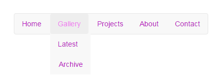
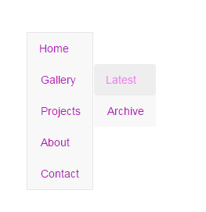

Stwórz menu (struktura jak na obrazku, wygląd dowolny) które dla szerokości przeglądarki powyżej 640px będzie rysowane w poziomie a dla mniejszych w pionie.
 
Uzupełnij funkcję run tak aby wyświetlała tabliczkę mnożenia od 1 do 10 w postaci:
1 2 3 4 ... 2 4 6 8 3 6 9 12 4 8 12 16 ...
var Exercise2 = {
run: function(){
console.warn('-- Exercise2 --');
// ....
}
}
Uzupełnij funkcję run która pobierze od użytkownika liczbę od 1 do 100 i podświetli ją (pogrubi/zmieni kolor/tło...) na tablicy z poprzedniego zadania. W przypadku nieprawidłowej wartości powinniśmy dostać stosowną informację. Możesz wykorzystać okienko prompt lub zwykłe pole input.
var Exercise3 = {
run: function(){
console.warn('-- Exercise3 --');
// .......
}
}
Uzupełnij funkcję run tak aby po uruchomieniu umieściła każde zdanie z poniższego tekstu w osobnym paragrafie <p>Ala ma kota bo pies ma pchły.</p>
Według informacji zdobytych przez redakcję Electreku, która powołuje się na swoje źródła wewnątrz Tesli, wkrótce będzie miała miejsce premiera nowej wersji Autopilota, a więc mechanizmu, który częściowo zamienia samochody w pojazdy autonomiczne. Nowa wersja ma być znaczącym usprawnieniem, głównie w kwestii bezpieczeństwa. Autopilot 2.0 będzie wykorzystywał nowe czujniki, jakie będą instalowane w samochodach Tesla. Należeć będą do nich, między innymi, dodatkowy radar analizujący przestrzeń wokół samochodu i trzy obiektywy zainstalowane z przodu pojazdy. Do tej pory samochody miały tylko jeden obiektyw i radar analizujący przestrzeń tylko przed pojazdem, uzupełniony o czujnik ultrasoniczny. Autopilot 2.0 ma mieć też doskonalsze algorytmy sztucznej inteligencji. Na razie nie wiadomo kiedy Autopilot 2.0 trafi na rynek konsumencki.
var Exercise4 = {
run: function(){
console.warn('-- Exercise4 --');
// .......
}
}